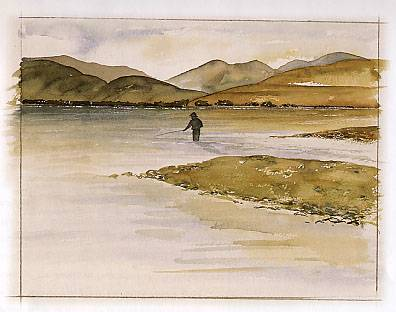
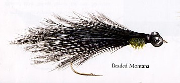
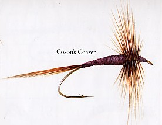
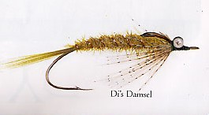
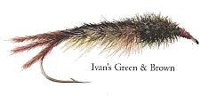
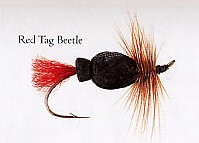
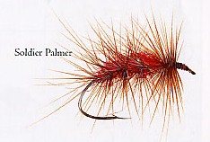
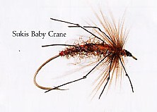
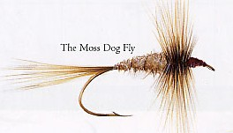

ティップス
８月 MARTIN HAYES 氏 McGREGOR 湖









フライタイヤー MARTIN HAYES 氏 の紹介
マーティン・ヘイズ氏はインドに生まれ育った。彼の父親は医者であり、また、ロッドやフライを自作するほど熱心な釣り人でもあった。マーティンが9歳の時に、父親がロッドのガイドを曲げて作る細工を教えてくれた。先の戦争の際にオーストラリアに逃れたマーティンは、ビクトリアにあるジーロング・グラマースクール（Geelong Grammar）で教育を受けた。グラマースクールをあと4年残した時期に彼は、イギリスへ帰ることとなった。
1975年にマーティンはフライフィッシングを始め、すぐにフライを巻くことを学んだ。彼が大きな喜びを感じるのはいつも、新しいフライやタイプの異なったフライを生み出すことや、安価なマテリアルを使うことである。例えば、バンクスペンの鎖（banks' pen chain）を昆虫の眼に用いたり、馬のしっぽの毛を虫の足に使ったり、ポリスチレンのボールを婦人用のタイツでくるんでフローティングアイにしたりといった工夫である。
世界中を釣り歩いた後にマーティンは、現在は純粋に楽しみのためだけに釣りをしている。彼の言うには、これまでで最も楽しかったのは、インドのクル・バレー（Kulu Valley）への釣行だそうである。“父が60年も前に釣った同じ山岳渓流を訪れたんだ。なんて素晴らしい魚だったろう！とても大きくてよくファイトしたよ。”
マーティンの最後の釣りの旅は、ニュージーランドへの釣行だった。“素晴らしい人々と、素晴らしい国だったね。”
これらの記事・画像の著作権は、Michael Scheele 氏 にあります。無断での転載・二次利用をお断りいたします。
Copyright © 2003-2009 Michael Scheele All Rights Reserved.
NZ釣行に向けてのフライタイイング へ
ティップス 目次へ
サイトマップ
ホームへ
お問い合わせ